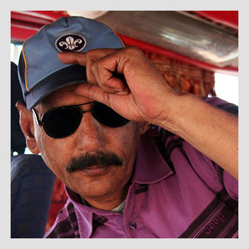
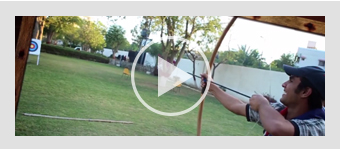

Why Join A.S.G.

Adventure Scout is about learning skills that you'd never learn in any other youth group. Sure you learn how to tie knots but you also learn First Aid, Outdoor Skills and Navigational Skills. It's all about learning how to survive, not just in the woods but in the real world as well! Scouting offers over 100 different topics to learn about. They cover topics from Sports, to Pakistani Lore, to White Water Rafting and Back Packing.
These principles have been taught in an atmosphere of recreation and fun, which allow young people to develop self-confidence, leadership and moral character. More and more men, trained as Scouts, are taking their places in today's world as responsible adult leaders. Men, who earned badges as Scouts, sit on the Supreme Court and in the chambers of Congress. Others hold important offices in our government, business and industry.
Shaheen Scouts
Age Limit: 7 to 11 years old.
The Cubs Scouts get to plan their adventures, they care for their community & the environment.
View details »
Boy Scouts
Age Limit: 12 to 17 years old.
Scouts get to do more for themselves and have more of their own adventures that they get to choose.
View details »
Rover Scouts
Age Limit: 18 to 25 years old.
Rovers are adults, looking to bring adventure, entertainment and service into everything they do.
View details »
Scout Leaders
Age Limit: 25 years above.
It provides you with an opportunity for adventure and fun while helping to develop the local youth.
View details »
MIRZA SHAHID BAIG,
Controller

Scouting can play a very vital role in forming the character of our youth, Promoting their physical, mental and spiritual development and making them well disciplined, useful and good citizen. We are living in a far from perfect world. Despite the progress of civilization, the law of jungle, unfortunately, still prevails. Might is considered right and the strong do not refrain from exploiting the weak. Self advancement, greed and lust for power sway the conduct of individuals, as that of nations.
MAHFOOZ YAR KHAN Advocate,
Group Chairman
The Adventure Scout Group provides adventurous activities and personal development oppotunities for young people aged 7-25. Personal development means promoting the physical, intellectual, social and spiritual well-being of the individual, helping them acheive their full potential. In Scouting, we believe that young people develop most when they are 'learning by doing', when they are given responsibility, work in teams, take acceptable risks and think for themselves.

SYED IRFAN ALI ZAIDI,
General Secretary
Scouting can play a very vital role in forming the character of our youth, Promoting their physical, mental and spiritual development and making them well disciplined, useful and good citizen. We are living in a far from perfect world. Despite the progress of civilization, the law of jungle, unfortunately, still prevails. Might is considered right and the strong do not refrain from exploiting the weak. Self advancement, greed and lust for power sway the conduct of individuals, as that of nations.
Donate
Adventure Scout Group has always been working to aid the society and provide adventurous activities. We wouldn't be able accomplish these without your help. Adventure Scout Group always seeks your aid.
"Your support is what we need most."
Videos


Get Involved
Becoming a scout would generate lots of opportunities to get involed in adventure and many different activities which you wouldn’t normally get to do.
SCOUTING IS FUN
Chief Scout Bear Grylls says life is about grabbing opportunities! We agree! Above everything else, Scouting is all about enjoying yourself, whatever you're doing – and there'll always be plenty to do!